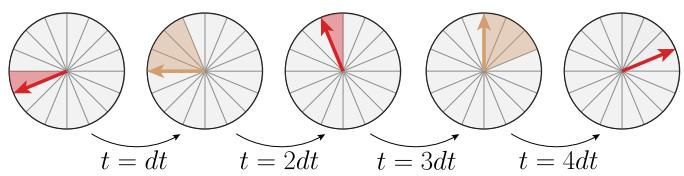
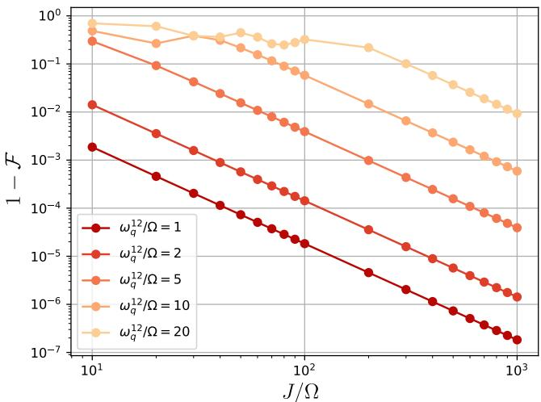
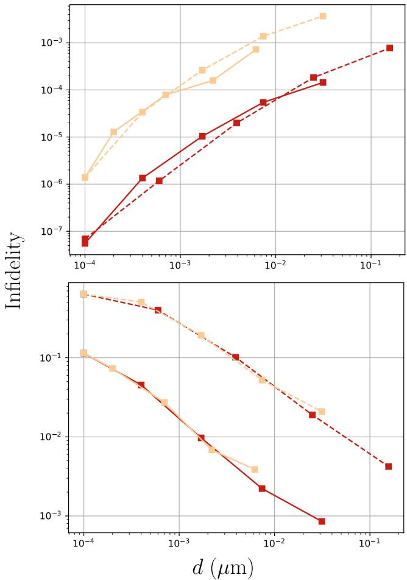
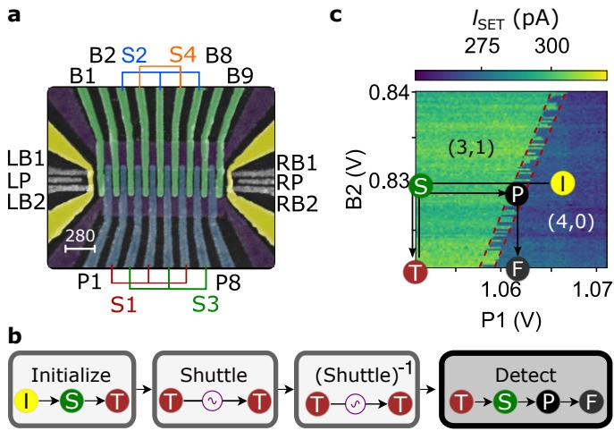
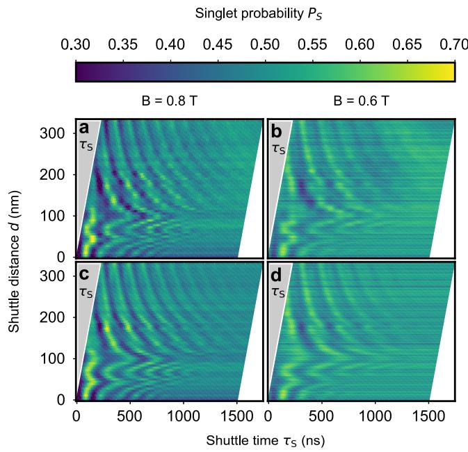
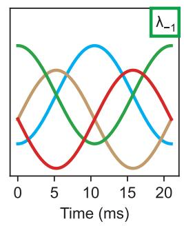
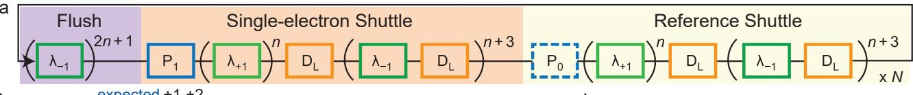

物理图像：全局场与频率失配
逐比特微波布线在大阵列下不可行（见低温电子学的 Rent 规则引脚墙），于是有提案让所有比特共用一路全局微波场。n 个自旋比特的系统哈密顿量为
其中 是相邻自旋间可原位调谐的交换耦合（典型导通值 10–1000 MHz）、 是各电子的 g 因子（取 ，能量、频率与磁场同一单位）。磁场由静态分量 （典型 0.1–1.4 T）与全局振荡分量 组成——这一路全局场是所有比特共享的控制通道。问题在于频率失配：每个比特的跃迁频率 由其 g 因子决定，而制造分散让同一阵列里 g 因子差异显著。要让目标比特与全局场共振、非目标比特远离共振，可调范围必须盖住全部频率分散——这正是全局操控的核心矛盾。
常见调谐手段是电场 Stark 移动：调 g 因子把目标比特拉进共振。但 Stark 移动的调谐范围通常只是自然频率分散的一小部分，大阵列下不够用；部分解决方案是”分箱法”（binning）——用 Stark 移动把比特调进若干个离散频率箱缓解频率拥挤，但高频分散场景下单比特保真度仍然超标。

单比特在两个量子点间振荡的时间演化示意：电子在频率 （红）与 （黄）的两个量子点之间快速转移，转移速率快于 Rabi 频率与频率分散时，电子获得等效的平均 g 因子。图源：Jnane et al. (2025)，Fig. 1。
输运均匀化：快输运极限下的平均 g 因子
核心思想是时间平均：如果一个电子以快于 Rabi 频率和频率分散的速率经历一组不同的 g 因子，它会获得等于所有经历过的 g 因子平均值的等效均匀化 g 因子。两种实现路径：交换驱动的双比特 SWAP、或自旋输运——让电子沿输运轨道（用磁性材料或微磁体提供 g 因子梯度）快速往返。输运方案更可扩展，还能顺带实现双比特门。
均匀化之后，频率可调性达到自然频率分散的量级（而不是 Stark 移动的”一小部分”）：用额外磁场梯度把频率谱收缩到两个 g 因子附近——目标组 与非目标组 ——然后按两种模式驱动：
- 模式 I：驱动频率 ，均匀化后的目标比特共振；
- 模式 II：驱动频率 ，以原始 g 因子共振。
两种模式的非保真度随输运距离 、速度 和驱动幅度 变化；数值模拟（2 万次蒙特卡洛，随机 g 因子分布）证明方案在 2×N 阵列和环路流水线架构上都有效，单比特保真度相对现有方案最多提升 100 倍，并可自然扩展到双比特门。

交换（swapping）协议的非保真度：以单一驱动音驱动两个持续交换的比特（频率 、）实现 门的错误率——交换协议是输运均匀化的替代实现，图中可见其保真度对频率失配的依赖。图源：Jnane et al. (2025)，Fig. 4。

输运协议的非保真度（模式 I 上、模式 II 下）：随输运距离 、速度 （黄线 10 m/s、红线 1 m/s）和驱动幅度 变化，由 2 万次蒙特卡洛模拟（随机 g 因子分布）得到——更快、更远的输运给出更好的均匀化，非保真度随之下降。图源：Jnane et al. (2025)，Fig. 6。
传送带模式：Si/SiGe 的连续轨道梭运
词条前文引用的锗输运实验之外，传送带模式（conveyor-mode）给出 Si/SiGe 平台的对应实现：交流栅压驱动的连续轨道（S形/N形）搬运单个电子，无需停顿式装载-移动-卸载——EPR 自旋对在轨道一端生成后由传送带分离到两端，自旋关联在搬运中保持。这种连续流模式与频率均匀化的”快输运极限”直接对接：传送速度远超退相干率时，电子在轨道各段的停留对相干的影响被平均掉。

传送带模式电子梭运：Si/SiGe 的交流栅压连续轨道——EPR 自旋对在轨道上生成、分离，自旋关联在搬运中保持。图源：Struck et al. (2023)，Fig. 1。

梭运保真度测量：分离后 EPR 关联的保持——传送带模式的相干验证。图源：Struck et al. (2023)，Fig. 2。
QuBus：微米级互联的 Si/SiGe 总线
词条输送路线的第三个案例：QuBus（quantum bus）在 Si/SiGe 中实现微米级距离的单电子传输+存储——总线构型（轨道+存储节点）与输送模式互补，微米级连通性验证了跨芯片尺度的量子互联可行性。

Si/SiGe QuBus：微米级传输+存储的单电子总线——跨芯片尺度互联的验证。图源：Xue et al. (2023)，Fig. 1。

QuBus 传输保真度：微米级距离的单电子传输效率。图源：Xue et al. (2023)，Fig. 2。
与其他概念的关系
- 输运轨道的物理实现依赖低温电子学的布线约束——全局操控正是为了绕开逐比特微波布线的引脚墙；均匀化后每比特所需的调谐电压也由交叉电容矩阵决定。
- 频率均匀化与自动调控互补：自动调控负责在给定调谐范围内闭环寻优，均匀化负责把调谐范围本身扩大到自然频率分散。
- 电子输运的实验基础是锗量子点中的相干自旋输运（2024 年已实测高保真输运）——本文的均匀化方案建立在输运保真度够高的前提上；硅侧的物理基础与约束（bucket-brigade 转移、 时标、谷劈裂景观）见电荷穿梭。
- 与Zeeman 效应的关系：跃迁频率 的 g 因子依赖是频率失配的根源，也是均匀化（平均 g 因子）生效的物理基础。
- 单自旋量子比特的 EDSR 操控通常靠微磁体梯度；全局操控把这一机制推广到阵列级——微磁体/磁性材料提供 g 因子梯度，输运提供时间平均。
- 穿越微米级无序景观的输运还要求可靠大的谷劈裂以避开自旋–谷热点：材料侧的确定性增强手段（长周期摆动阱 + 剪切应变解锁的 2k₁ 共振）与均匀化策略互补——一个抹平频率分散，一个抬高能隙下限。硅传送带穿梭（QuBus）上的实验进一步给出操作侧对策：逐点测得的 地图上选轨迹绕开低劈裂区与自旋–谷共振，或以 >2.8 m/s 二能级式高速穿越共振、以快速往返进入运动变窄区——10 μm 累计穿梭误差 <8%（见该词条”穿梭通道的 E_VS 地图”一节）；把”选轨迹绕行”推到架构级的二维 clavette 栅全向穿梭见电荷穿梭词条”全向穿梭”一节。
参考文献
- Jnane, H., Siegel, A., Gonzalez-Zalba, M. F., & （2025）. Harnessing electron motion for global spin qubit control. arXiv:2503.12767
- 相干自旋输运的实验基础见 Coherent spin qubit shuttling through germanium quantum dots。
完整文献库（含各篇站内全文页）见 参考文献库。